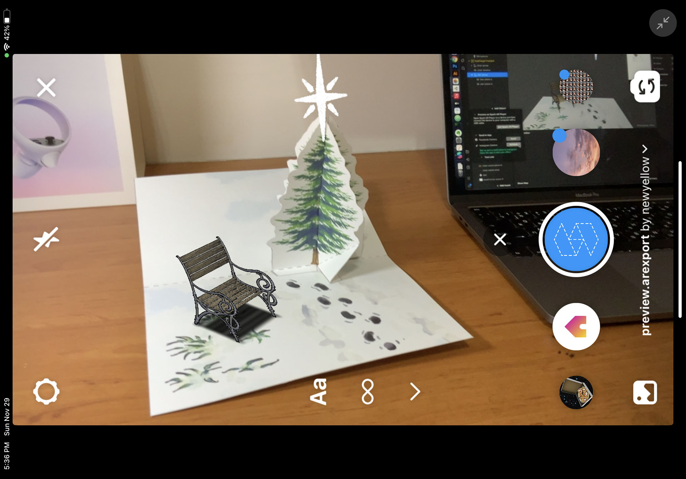

Project Description
For this project, we will build a 3D bench using only 2D planes, putting a glowing star on the tree and creating 3D masking for the tree.
This project is kind of a practice project for the series. The techniques we will be using in this project have already been covered in the previous projects, but with more complexity.
The best way to master something is through practice. From working on the 3D bench, you will get an idea of the 3D modeling process, making it easier for you to learn 3D modeling in the future.
By practicing the masking technique again, you will have a better understanding of how and when you can use the masking technique, which will be very handy in your future AR projects.
Assets for this Project
You can download all the assets here: Project C - Xmas Tree
- It is strongly recommended that you watch the Snowman tutorial before starting this one. The Snowman tutorial provides a very detailed walk-through of the basic functions that will not be covered here.
Set Up Tracking
For this step, you need to do the following:
- Create a new project.
- Add fixedTargetTracker to the scene.
- Import the images.
- Change fixedTargetTracker image to floor-tracker-image.
After you’re done, the project will look like this:
If you’re unfamiliar with these steps, please refer to Project A (Snowman) for a more detailed step-by-step tutorial.
Set Up the Object
The scene setup for this project is slightly different from the previous two. In Projects A and B, the images are parallel to the tracking image. However, in this project, the tracking image is the floor, so the images need to stand perpendicularly on the tracking image.
Furthermore, since you can't rotate the fixedTargetTracker in Spark AR Studio, the editing might be a bit strange. But don’t worry, you’ll get used to it!
Create a Two-Sided Plane
- Create a chair-side-body-A material for the chair-side-body-A image and put it on a plane. Make sure you check the “Alpha Test”. Since we are going to transform planes into a 3D object (rather, something that feels like a 3D model), we need to activate this option.
As you rotate the plane, you might notice that the back of the plane is transparent. This is because the built-in plane is one-sided. As a result, we need to create another plane for the back. - Create another plane for the back (or right-click on the plane and select “Duplicate”).
- Create a chair-side-B material for the back plane and use chair-side-B image as texture.
- Set the back plane's rotation values to 0, 180, 0.
- It’s suggested that you group these two planes for easier movement, rotation, scaling. You can do so by creating a “Null Object” and place both planes under its hierarchy.
- You can now rotate the object, with it appearing to be a two-sided plane.


*Material's Double-Sided Setting
There's an easier way to create a double-sided plane. You can check the “double-sided” option in the material setting.

However, with this method, the direction of light for the second side will be incorrect and it will feel like that side is not interacting with the lights.
This is the result of the "Light Normal" information in 3D models. Light normal is a direction value that defines how the 3D surface interacts with lights and is defined by vertices, which are the four corners of the plane. The “double-sided” function generates a second surface with the same vertices, so the light normal will be the same as the first surface, which is unrealistic in 3D environments.
So, if the object's material type is standard, don't use the double-sided option. Instead, duplicate the plane. However, if your object's material type is flat, which means it doesn’t interact with the lights, opt for the double-sided option.
Composing the Chair
- Duplicate the chair-sided object and place it on the other side.
- Create a wood stick object in the same way the two-sided chair side was created. Don’t forget to group them.
- Duplicate the wood stick object and position them to your liking. A 3D bench is then completed!
- If you remembered to group the objects, you will be able to move, rotate, and scale the entire bench at once.
- There's an additional chair-shadow texture you can use to simulate a real shadow, making the chair more realistic when viewing in AR.


Placing the Star
- Create a 3D star using the two-sided placement technique in the same manner as composing the chair.
- Place the star on the tree. Well, we can't see where the tree is, but we know the relationship between the tracked image and the paper tree. So, we can make quite a good guess.
- Test the effect on your device. If the star's positioning is off, make adjustments in the editor and try again. Repeat this until it looks right to you. 
Make It Snow
- Create a particle system for the snow effect. The steps are introduced in Project A (Snowman); please refer to it for more detailed directions.
- Generate heavier snow by increasing the birthrate and lifespan values. This is important if the next step is creating a masking for the tree. The final outcome will look nicer if the tree is surrounded by snow.
Make the Star Glow
- You can also add another particle system for the star using the glow-particle image to create a glowing effect.
Creating the Illusion
As mentioned in Project B (Woodhouse), the virtual objects are always rendered in front of real-world images. So, if we want to make it seem like snow is really falling around the paper tree, we can use the masking technique.
Create Masks for the Tree
- Create a tree-mask material with tree-mask image. Set opacity to 1 and alpha test cutoff to 0.
- Create a layer for the tree-mask object and arrange its order to the last.
- These steps are similar to the window masking tip mentioned in Project B. For more details, you can refer to that section.
- Place the two tree-mask objects using the same technique as placing the star, test on your device, and adjust positioning in the editor until the result is satisfactory.
- The tree’s masking position does not need to be perfect since it only covers the snowflakes. The edge of the mask will not be obvious.


*About the Trial-and-Error Positioning Technique
It might seem silly to rely on trial-and-error methods for positioning., i.e., the tree mask in this project and the girl image in Snowman. However, this technique actually brings forth more possibilities for AR projects.
Generally, if we want to create AR effect on objects, we rely heavily on the tracking technology. For example, if we want a face-tracking AR, the system needs to be equipped with the face-tracking technology (which Spark AR has and performs very well at). So, if we want to create an AR effect on cans or even statues, we might need a “can-tracking” or “statue-tracking” feature to do that.
With the positioning technique, however, we don't need the tracking technology. instead, we can build an AR effect on anything using an image as a tracking target if we can spot an appropriate way to place and image beside the target. As in this project, we don't really track the tree; instead, we use the floor image for tracking.
Additional Details
There are some additional things we could work on to improve the effect. However, since the techniques have already been covered in the previous tutorials, I will simply list them below. If you want to find out more details, you could initiate the sample project.
- You can place text on the card. And by applying a shadow texture, you can make the texts appear to float on the card.
- You can create animation when tracking is on. For example, the chair becoming bigger, the star popping up, and the text floating.
- There are separate snow textures for each part of the bench. This is to create the animation of “snow slowly piling up” on the bench.
- Aligning the animated glow plane with the star will make the star appear to be glowing.


The project is now done. Congratulations!
You should be able to see a result as demonstrated in the video below: